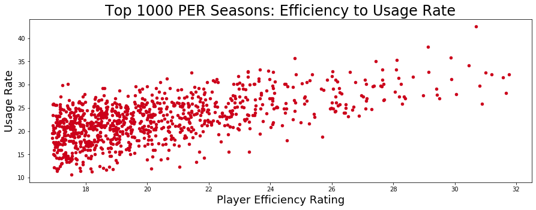
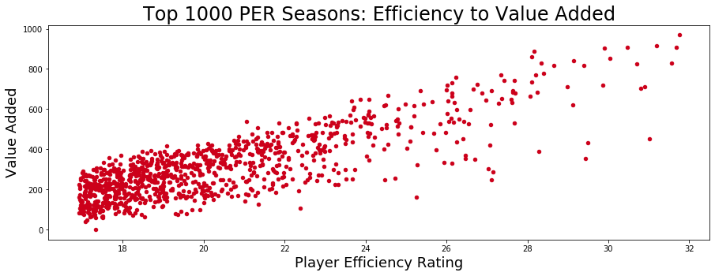
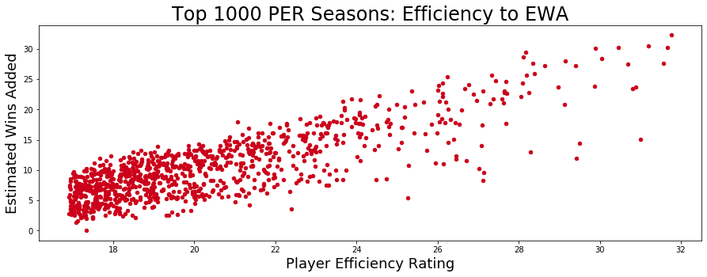
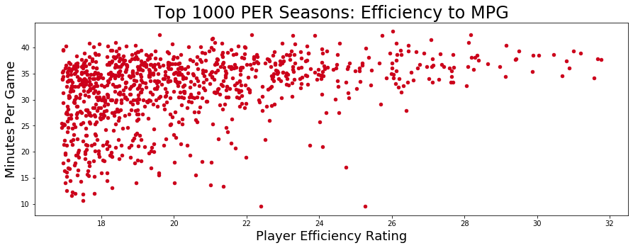
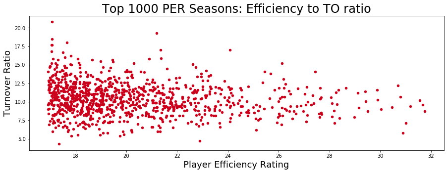

<div class="background">
  <div class="page">
    <div class="heading">
      <h2><u>ADVANCED STAT COMPARISONS</u></h2>
      <p>
        Player Efficiency Rating is one of many <span>Advanced Stats</span> that are used in the NBA to 
        help better understand a player's contribution to a team.  It always allows comparisons of players 
        from different NBA eras.  For example, in recent years scoring has gone up significantly.  In the 
        2017-18 NBA season, the average number of points per game was 106.3 PPG up from 95.6 during the 
        1997-98 season.  We would want those number to be relative when comping the offesnive out put of 
        Devin Booker and Michael Jordan.  On this page, we compare the relationship between PER and other 
        advanced stats.  Some of the stats we will be comparing to PER are <span>Usage Rate</span> (USG), 
        <span>Value Added</span> (VA), and <span>Estimated Wins Added</span> (EWA).
      </p>

      <p>
        Below is an example of the code we will use to create scatter plots of the 1,000 highest PER seasons
        compared to the other stats listed above.  Several of such plots can be found below.
      </p>

      
      
      
      
      

      <p>
        As you can see all four graphs above, especially the first three, follow a very similar pattern.  That is 
        not surprising as all the statistics we compared would all be considered positive statistics, meaning that 
        a higher value for any of them would imply a better basketball player, while having a high turnover ratio 
        would indicated a less talented basketball player.  We can also see the relative accuracy of all of these 
        statistics by the way no individual, basic stat, can disproportionately impact the whole of an advanced 
        stat.<br><br>
        You can see an inverse relationship in the graph below where PER is compared against the previsouly 
        mentioned Turnover Ratio. Notice that where the turnover ratio is at its highest is where PER is at 
        its lowest.
      </p>

      

      <div class="navigate">
        <a [routerLink]="['/per']">PREVIOUS PAGE</a>
      </div>

    </div>
  </div>
</div>
